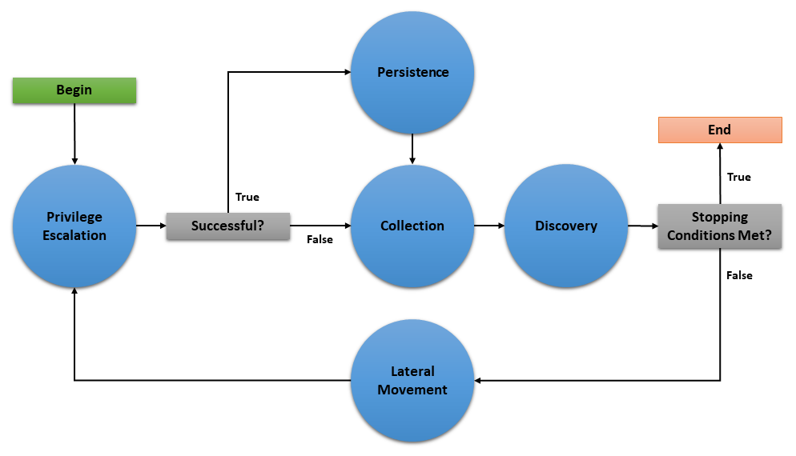

How to Build Planners¶
For any desired planner decision logic not encapsulated in the default batch planner (or any other existing planner), CALDERA requires that a new planner be implemented to encode such decision logic.
Buckets¶
The cornerstone of how planners make decisions is centered on a concept we call ‘buckets’. Buckets denote the planner’s state machine and are intended to correspond to buckets of CALDERA abilities. Within a planner, macro level decision control is encoded by specifying which buckets (i.e. states) follow other buckets, thus forming a bucket state machine. Micro level decisions are made within the buckets, by specifying any logic detailing which abilities to send to agents and when to do so.
CALDERA abilities are also tagged by the buckets they are in. By default, when abilities are loaded by CALDERA, they are tagged with the bucket of the ATT&CK technique they belong to. CALDERA abilities can also be tagged/untagged at will by any planner as well, before starting the operation or at any point in it. The intent is for buckets to work with the abilities that have been tagged for that bucket, but this is by no means enforced.
Creating a Planner¶
Let’s dive into creating a planner to see the power and flexibility of the CALDERA planner component. For this example, we will implement a planner that will carry out the following state machine:

The planner will consist of 5 buckets: Privilege Escalation, Collection, Persistence, Discovery, and Lateral Movement. As implied by the state machine, this planner will use the underlying adversary abilities to attempt to spread to as many hosts as possible and establish persistence. As an additional feature, if an agent cannot obtain persistence due to unsuccessful privilege escalation attempts, then the agent will execute collection abilities immediately in case it loses access to the host.
This document will walk through creating three basic components of a planner module (initialization, entrypoint method, and bucket methods), creating the planner data object, and applying the planner to a new operation.
Creating the Python Module¶
We will create a python module called privileged_persistence.py and nest it under app/ in the mitre/stockpile plugin at plugins/stockpile/app/privileged_persistence.py.
First, lets build the static initialization of the planner:
class LogicalPlanner:
def __init__(self, operation, planning_svc, stopping_conditions=()):
self.operation = operation
self.planning_svc = planning_svc
self.stopping_conditions = stopping_conditions
self.stopping_condition_met = False
self.state_machine = ['privilege_escalation', 'persistence', 'collection', 'discovery', 'lateral_movement']
self.next_bucket = 'privilege_escalation'
Look closer at these lines:
def __init__(self, operation, planning_svc, stopping_conditions=()):
self.operation = operation
self.planning_svc = planning_svc
self.stopping_conditions = stopping_conditions
self.stopping_condition_met = False
The __init__() method for a planner must take and store the required arguments for the operation instance, planning_svc handle, and any supplied stopping_conditions.
Additionally, self.stopping_condition_met, which is used to control when to stop bucket execution, is initially set to False. During bucket execution, this property will be set to True if any facts gathered by the operation exactly match (both name and value) any of the facts provided in stopping_conditions. When this occurs, the operation will stop running new abilities.
self.state_machine = ['privilege_escalation', 'persistence', 'collection', 'discovery', 'lateral_movement']
The self.state_machine variable is an optional list enumerating the base line order of the planner state machine. This ordered list does not control the bucket execution order, but is used to define a base line state machine that we can refer back to in our decision logic. This will be demonstrated in our example below when we create the bucket methods.
self.next_bucket = 'privilege_escalation'
The self.next_bucket variable holds the next bucket to be executed. This is the next bucket that the planner will enter and whose bucket method will next control the planning logic. Initially, we set self.next_bucket to the first bucket the planner will begin in. We will modify self.next_bucket from within our bucket methods in order to specify the next bucket to execute.
Additional Planner class variables
It is also important to note that a planner may define any required variables that it may need. For instance, many custom planners require information to be passed from one bucket to another during execution. This can be done by creating class variables to store information which can be accessed within any bucket method and will persist between bucket transitions.
Now, lets the define the planner’s entrypoint method: execute
async def execute(self):
await self.planning_svc.execute_planner(self)
execute is where the planner starts and where any runtime initialization is done. execute_planner works by executing the bucket specified by self.next_bucket until the self.stopping_condition_met variable is set to True. For our planner, no further runtime initialization is required in the execute method.
Finally, lets create our bucket methods:
async def privilege_escalation(self):
ability_links = await self.planning_svc.get_links(self.operation, buckets=['privilege escalation'])
paw = ability_links[0].paw if ability_links else None
link_ids = [await self.operation.apply(l) for l in ability_links]
await self.operation.wait_for_links_completion(link_ids)
successful = self.operation.has_fact('{}.privilege.root'.format(paw), True) or self.operation.has_fact('{}.privilege.admin'.format(paw), True)
if successful:
self.next_bucket = 'persistence'
else:
self.next_bucket = 'collection'
async def persistence(self):
await self.planning_svc.exhaust_bucket(self, 'persistence', self.operation)
self.next_bucket = await self.planning_svc.default_next_bucket('persistence', self.state_machine)
async def collection(self):
await self.planning_svc.exhaust_bucket(self, 'collection', self.operation)
self.next_bucket = 'discovery'
async def discovery(self):
await self.planning_svc.exhaust_bucket(self, 'discovery', self.operation)
lateral_movement_unlocked = bool(len(await self.planning_svc.get_links(self.operation, buckets=['lateral_movement'])))
if lateral_movement_unlocked:
self.next_bucket = await self.planning_svc.default_next_bucket('discovery', self.state_machine)
else:
# planner will transtion from this bucket to being done
self.next_bucket = None
async def lateral_movement(self):
await self.planning_svc.exhaust_bucket(self, 'lateral_movement', self.operation)
self.next_bucket = 'privilege_escalation'
These bucket methods are where all inter-bucket transitions and intra-bucket logic will be encoded. For every bucket in our planner state machine, we must define a corresponding bucket method.
Lets look at each of the bucket methods in detail:
privilege_escalation()- We first useget_linksplanning service utility to retrieve all abilities (links) tagged as privilege escalation from the operation adversary. We then push these links to the agent withapplyand wait for these links to complete withwait_for_links_completion(), both from the operation utility. After the links complete, we check for the creation of custom facts that indicate the privilege escalation was successful (Note: this assumes the privilege escalation abilities we are using create custom facts in the format “{paw}.privilege.root” or “{paw}.privilege.admin” with values ofTrueorFalse). If privilege escalation was successful, set the next bucket to be executed to persistence, otherwise collection.persistence(),collection(),lateral_movement()- These buckets have no complex logic, we just want to execute all links available and are tagged for the given bucket. We can use theexhaust_bucket()planning service utility to apply all links for the given bucket tag. Before exiting, we set the next bucket as desired. Note that in thepersistence()bucket we use thedefault_next_bucket()planning service utility, which will automatically choose the next bucket after “persistence” in the providedself.state_machineordered list.discovery()- This bucket starts by running all discovery ability links available. Then we utilize a useful trick to determine if the planner should proceed to the lateral movement bucket. We useget_links()to determine if the discovery links that were just executed ended up unlocking ability links for lateral movement. From there we set the next bucket accordingly.
Additional Notes on Privileged Persistence Planner
You may have noticed that the privileged_persistence planner is only notionally more sophisticated than running certain default adversary profiles. This is correct. If you can find or create an adversary profile whose ability enumeration (i.e. order) can carry out your desired operational progression between abilities and can be executed in batch (by the default batch planner) or in a sequentially atomic order (by atmomic planner), it is advised to go that route. However, any decision logic above those simple planners will have to be implemented in a new planner.
The privileged persistence planner did not have explicit logic to handle multiple agents. We just assumed the planner buckets would only have to handle a single active agent given the available ability links returned from the planning service.
Creating the Planner Object¶
In order to use this planner inside CALDERA, we will create the following YAML file at plugins/stockpile/data/planners/80efdb6c-bb82-4f16-92ae-6f9d855bfb0e.yml:
---
id: 80efdb6c-bb82-4f16-92ae-6f9d855bfb0e
name: privileged_persistence
description: |
Privileged Persistence Planner: Attempt to spread to as many hosts as possible and establish persistence.
If privilege escalation attempts succeed, establish persistence. Then, collect data.
module: plugins.stockpile.app.privileged_persistence
params: {}
ignore_enforcement_modules: []
This will create a planner in CALDERA which will call the module we’ve created at plugins.stockpile.app.privileged_persistence.
NOTE: For planners intended to be used with profiles containing repeatable abilities, allow_repeatable_abilities: True must be added to the planner YAML file. Otherwise, CALDERA will default the value to False and assume the planner does not support repeatable abilities.
Using the Planner¶
To use the planner, create an Operation and select the “Use privileged_persistence planner” option in the planner dropdown (under Autonomous). Any selected planner will use the abilities in the selected adversary profile during the operation. Since abilities are automatically added to buckets which correlate to MITRE ATT&CK tactics, any abilities with the following tactics will be executed by the privileged_persistence planner: privilege_escalation, persistence, collection, discovery, and lateral_movement.
A Minimal Planner¶
Custom planners do not have to use the buckets approach to work with the CALDERA operation interface if not desired. Here is a minimal planner that will still work with the operation interface.
class LogicalPlanner:
def __init__(self, operation, planning_svc, stopping_conditions=()):
self.operation = operation
self.planning_svc = planning_svc
self.stopping_conditions = stopping_conditions
self.stopping_condition_met = False
async def execute(self):
#
# Implement Planner Logic
#
return
Advanced Fact Usage¶
In addition to the basic (name, value) information present in facts and documented in Basic Usage, there are some additional fields that may prove useful when developing and working with planners.
Fact Origins¶
As of Caldera v4.0, facts now have the new origin_type and source fields, which identify how Caldera learned that fact. There are 5 possible values for the origin_type field:
DOMAIN - This fact originates from Caldera’s general knowledge about environments
SEEDED - This fact originates from a source file, which was used to seed an operation
LEARNED - This fact originates from an operation, which uncovered it
IMPORTED - This fact originates from a previous operation, or another pre-existing fact collection
USER - This fact originates from a User, i.e. was entered through the GUI
The source field, on the other hand, contains a UUID4 that corresponds to the originating object described by origin_type.
Fact Links/Relationships¶
As of Caldera v4.0, facts also now have new fields in them that track the Links and Relationships that have contributed to that fact in some way, accessible as links and relationships respectively. Each of these properties is a list of corresponding objects, with links corresponding to all Link objects that generated/identified this Fact, and relationships corresponding to all Relationship objects that reference this Fact.
Fact Score¶
One potentially useful Fact property for planners is the score property. This tracks how many times a fact has been used successfully in links, allowing facts to have an inherent ‘weight’ to them when they are useful. Facts start with a score of 1, a value that typically increases by 1 every time a link uses it (though scores can be increased or decreased by varying amounts by other means). For context, a link’s score, when generated by Caldera’s core planning services, is simply the sum of the scores of the facts utilized by that link.
Planning Service Utilities¶
Within a planner, these utilities are available from self.planning_svc:
exhaust_bucket()- Apply all links for specified bucket. Blocks execution until all links are completed, either after batch push, or separately for every pushed link. Allows a single agent to be specified.execute_links()- Wait for links to complete and update stopping conditions.default_next_bucket()- Returns next bucket as specified in the given state machine. If the current bucket is the last in the list, the bucket order loops from last bucket to first. Used in the above example to advance to the next bucket in the persistence and discovery buckets.add_ability_to_next_bucket()- Applies a custom bucket to an ability. This can be used to organize abilities into buckets that aren’t standard MITRE ATT&CK tactics.execute_planner()- Executes the default planner execution flow, progressing from bucket to bucket. Execution will stop if: all buckets have been executed (self.next_bucketis set toNone), planner stopping conditions have been met, or the operation is halted.get_links()- For an operation and agent combination, create links (that can be executed). When no agent is supplied, links for all agents in an operation are returned. Usesoperation.all_facts()to determine if an ability has been unlocked. Used in the above example in the discovery bucket to determine if any lateral movement abilities have been unlocked.get_cleanup_links()- Generates cleanup links for a given operation, to be run when a operation is completed.generate_and_trim_links()- Creates new links based on provided operation, agent, and abilities. Optionally, trim links usingtrim_links()to return only valid links with completed facts. Facts are selected from the operation usingoperation.all_facts().check_stopping_conditions()- Checks the collected operation facts against the stopping conditions set by the planner.update_stopping_condition_met()- Update a planner’sstopping_condition_metproperty with the results ofcheck_stopping_conditions().
Operation Utilities¶
Within a planner, all public utilities are available from self.operation. The following may assist in planner development:
apply()- Add a link to the operation.wait_for_links_completion()- Wait for started links to be completed.all_facts()- Return a list of all facts collected during an operation. These will include both learned and seeded (from the operation source) facts.has_fact()- Search an operation for a fact with a particular name and value.all_relationships()- Return a list of all relationships collected during an operation.active_agents()- Find all agents in the operation that have been active since operation start.
Knowledge Service¶
As of Caldera V4.0, a new service has been added to the core of Caldera for use with planners and other components that make use of facts: the Knowledge Service. This service allows the creation, retrieval, updating, and deletion of facts, relationships, and rules.
Typically, users should not need to interact with this service directly, as common usage patterns are already baked into core objects such as Link, Agent, and Operation, but the service can be accessed by using BaseService.get_service('knowledge_svc'), should the need arise for more complex interactions with the available data.
The Knowledge Service stores data persistently in the same manner that Caldera’s internal Data Service does (by writing it to a file on shutdown), and can be cleared in much the same way if necessary (by using the --fresh argument on the server).
The following methods are available from the Knowledge Service:
app.objects.secondclass.c_fact
KnowledgeService.add_fact(fact)- Add a fact to the Knowledge Service’s datastore. Thefactargument must be an already instantiatedFact()object.KnowledgeService.delete_fact(criteria)- Remove matching facts from the datastore. Thecriteriaargument should be a dictionary with fields to match existing facts against for selection.KnowledgeService.get_facts(criteria)- Retrieve matching facts from the datastore. Thecriteriaargument should be a dictionary with fields to match existing facts against for selection.KnowledgeService.update_fact(criteria, updates)- Update an existing fact in the datastore. Thecriteriaargument should be a dictionary with fields to match existing facts against for selection, andupdatesshould be a dictionary with fields to change and their new values.KnowledgeService.get_fact_origin(fact)- Identifies the location/source of a provided fact. Thefactargument can be either a name to search for or a full blown Fact object. The return is a tuple of the ID corresponding to the origin object for this fact, and the type of origin object.
app.objects.secondclass.c_relationship
KnowledgeService.add_relationship(relationship)- Add a relationship to the datastore. Therelationshipargument must be an already instantiatedRelationship()object.KnowledgeService.delete_relationship(criteria)- Remove a relationship from the datastore. Thecriteriaargument should be a dictionary containing fields to match relationships against.KnowledgeService.get_relationships(criteria)- Retrieve a relationship from the datastore. Thecriteriaargument should be a dictionary containing fields to match relationships against, and can contain further dictionaries to match facts in relationships against.KnowledgeService.update_relationship(criteria, updates)- Update an existing relationship in the datastore. Thecriteriaargument should be a dictionary containing files to match relationships and their component facts against, while theupdatesargument should be dictionary of similar form, containing the values to update.
app.objects.secondclass.c_rule
KnowledgeService.add_rule(rule)- Add a rule to the datastore. Theruleargument must be an already existingRule()object.KnowledgeService.delete_rule(criteria)- Remove a rule from the datastore. Thecriteriaargument should be a dictionary containing fields and values to match existing rules against.KnowledgeService.get_rules(criteria)- Retrieve matching rules from the datastore. Thecriteriaargument should be a dictionary containing files to match existing rules against.
All objects added to the Knowledge service are checked against existing objects in order to enforce de-duplication, with one caveat. As origin is tracked for facts generated by links in the current implementation, this means duplicate facts created during different operations can exist in the fact store simultaneously. Facts/Relationships are usually automatically added to the fact store by Link objects as part of the process of parsing output, though they can be added manually should the need arise.